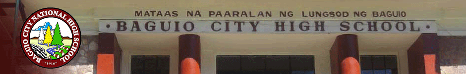

High School Alma Mater
Baguio City National High School
The former name of Baguio City National High School was Mountain Province High School. (Benguet was merged with its parent province, the Old Mountain Province.) Classes were once held at the Teachers' Camp and native girls from the provinces near Baguio were housed at the BUA dormitory, known today as the Pacdal Elementary School. Among the pioneer teachers were Jess L. Gains (its earliest principal), Juan Balagot, Servillano Tumaneng, Pedro Balagot, Genoveva Llamas, Esperanza Ver, Donate Guerzon, Grace H. Miller, Petra Ramirez, Petra D. Makatakki, Russel B. Tudias and Domingo T. Kasarta. In 1937, the national government transferred the financial responsibility of maintaining the secondary school to the city government of Baguio. That's why the name was changed to Baguio City National High School. Students of the normal course being held that time were transferred to Trinidad Agricultural High School which became the responsibility of the Old Mountain Province. In the same year, the school squatted at the present site on which the Baguio Convention Center was standing until World War II broke out in 1941. Classes continued during the Japanese Occupation at the present Quezon Elementary School; however, classes were disrupted by the initial occupation and liberation battles. BCNHS began admitting students at the place of what is now the Casa Vallejo Hotel, moving back to Teacher's Camp in the second semester. Due to the occasional transfer of the BCNHS Campus, several mayors worked for the permanent site of the BCNHS building. Luis Torres succeeded in establishing that the ex-Mt. Province governor Karlo's place was the property of the local and not of the national government. Mayor Gil B. Mallares made every move to the approval of the said site as the permanent location of BCNHS. He secured a P 180,000 loan from the Rehabilitation Financing Corporation (RFC; now Development Bank of the Philippines) to start the construction of the building on September 20, 1953. The Parent-Teachers' Association of the school continued to ask for the permanent site of the BCNHS headed by the principal Gregorio R. Ariz and the PTA president Rufino S. Bueno (served 1948–1958). The present site of the high school was segregated from Burnham Park territory on June 27, 1953 under virtue of Presidential Proclamation No. 401 by Pres. Elpidio Quirino. The park and the adjoining Baden-Powell Hall were named after Boy Scout founders Frederick Russell Burnham and Robert Baden-Powell. The proclamation awarded BCNHS 11,840 square metres (127,400 sq ft) of land. Construction began under the administration of Mayor Benito H. Lopez and was completed during the term of Mayor Alfonzo Tabora. Inauguration rites were held on October 24, 1954, the school foundation day. In 1972, the Special Science Class started but was discontinued after two years with the implementation of the revised secondary curriculum. It was resumed in 1984 with the effort of Class 1958 alumni, the City Council, and the school administration. This was accomplished through then-councilor Bert Floresca as member of the committee on education and president of the school's alumni association. After rigorous research by the school's stakeholders, Baguio City High School was certified by the Baguio City Council as officially founded on June 16, 1916, the same year as Benguet State University.[2] The council approved an ordinance calling for the celebration of the school's centennial in June 2016.